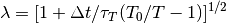
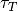
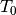
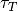
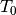

BerendsenThermostat - Berendsen thermostat Object¶
This is the Berendsen thermostat implementation according to the original paper [Berendsen84].
If Berendsen thermostat is defined (as a property of integrator) then at the each run the system size
and the particle coordinates will be scaled by scaling parameter  according to
the formula:
according to
the formula:

where  - integration timestep,  - time parameter (coupling parameter),
 - external temperature and
- integration timestep,  - time parameter (coupling parameter),
 - external temperature and  - instantaneous temperature.
- instantaneous temperature.
Example:
>>> berendsenT = espressopp.integrator.BerendsenThermostat(system)
>>> berendsenT.tau = 1.0
>>> berendsenT.temperature = 1.0
>>> integrator.addExtension(berendsenT)
Definition:
In order to define the Berendsen thermostat
>>> berendsenT = espressopp.integrator.BerendsenThermostat(system)one should have the System defined.
Properties:
berendsenT.tau
The property ‘tau’ defines the time parameter .
berendsenT.temperature
The property ‘temperature’ defines the external temperature .
Setting the integration property:
>>> integrator.addExtension(berendsenT)It will define Berendsen thermostat as a property of integrator.
One more example:
>>> berendsen_thermostat = espressopp.integrator.BerendsenThermostat(system)
>>> berendsen_thermostat.tau = 0.1
>>> berendsen_thermostat.temperature = 3.2
>>> integrator.addExtension(berendsen_thermostat)
Canceling the thermostat:
>>> # define thermostat with parameters >>> berendsen = espressopp.integrator.BerendsenThermostat(system) >>> berendsen.tau = 2.0 >>> berendsen.temperature = 5.0 >>> integrator.addExtension(berendsen) >>> ... >>> # some runs >>> ... >>> # disconnect Berendsen thermostat >>> berendsen.disconnect()Connecting the thermostat back after the disconnection
>>> berendsen.connect()
-
espressopp.integrator.BerendsenThermostat(system)¶ Parameters: system –